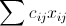
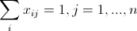
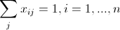

From the Georgia Institue of Technology website:
Given a collection of cities and the cost of travel between each pair of them, the traveling salesman problem, or TSP for short, is to find the cheapest way of visiting all of the cities and returning to your starting point. In the standard version we study, the travel costs are symmetric in the sense that traveling from city X to city Y costs just as much as traveling from Y to X.
Given our definition of a TSP from above, we can start formulating the problem as an integer program:
| min |  | |
| subject to |  | (must leave each city) |
|  | (must enter each city) |
- A variable xij for each link: (1,2) (1,3) (1,4) (2,3) (2,4) (3,4)
- A constraint for each city, that says each city must be visited and left:
- x1,2 + x1,3 + x1,4 = 2
- x1,2 + x2,3 + x2,4 = 2
- x1,3 + x2,3 + x3,4 = 2
- x1,4 + x2,4 + x3,4 = 2
So now we've got our integer programming formulation, lets try it out on a problem.
You can drag the cities around and re-solve, or add cities to make it more complex. When you are ready to move on, click the Reset button.
You may notice that the solution is not quite right. While each city is visited and left, the optimal solution was not a path through all the cities but instead two smaller paths. We can call these smaller tours subtours, and the constraints necessary to eliminate them are called subtour-elimination constraints.
For a better and more detailed explanation of this, check out the Georgia Tech website.
To complete our integer programming formulation we need to add these subtour-elimination constraints. An example of a subtour elimination constraint for the 6 city problem shown above would be:
- x0,1 + x1,2 + x0,2 <= 2
This says that no more than two of the arcs between the nodes (0,1,2) are allowed to be in the solution. Here is something to try: how many possible subtour-elimination constraints are there for this problem? The answer is big, and keeps getting bigger as the number of cities grows. It'd take a long time to just write out all those constraints, let alone solve it. And yet, people solve TSPs with integer programming - so whats the secret?
Lets try adding that subtour-elimination constraint we worked out before:
Have you followed the above instructions? Now re-solve the TSP above. Perfect!
We only need one of the many possible subtour-elimination constraints to change our nearly-correct solution into the optimal solution. A very similar method was first used quite some time ago, in 1954 to solve a problem with 49 cities! This way of solving a problem, by first solving a relaxed version of it and then adding constraints (or "cuts") to improve the relaxation, is one of the techniques used to solve all sorts of integer programs.